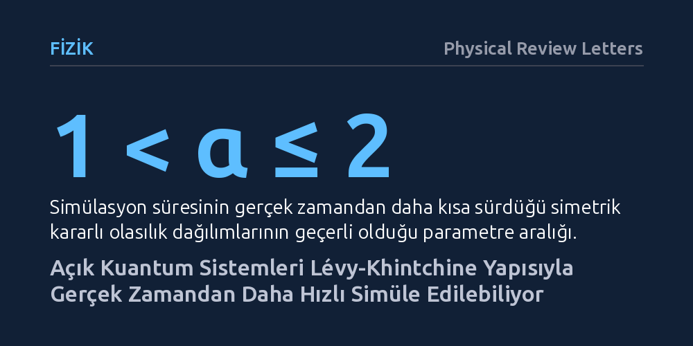

FIZIK · Physical Review Letters · 2026-10-19
Araştırmacılar, çevreyle etkileşen açık kuantum sistemlerinin simülasyonunun ne kadar hızlandırılabileceğini araştırdı. Lévy-Khintchine matematiksel temsilini kullanan ekip, belirli enerji kaybı süreçlerinin simülasyon süresini kısaltarak algoritmik olarak aşılamayacak en uygun hız sınırlarını kanıtladı.
Kuantum sistemlerinin çevreyle etkileşimini taklit ederken her zaman gerçek süre kadar beklemek gerekmediğini ve bu simülasyonların teorik hız sınırlarını gösteriyor.

Kuantum dünyasının davranışlarını taklit etmek, kuantum bilgisayarların en temel hedeflerinden biridir. Ancak gerçek dünyada hiçbir kuantum sistemi bütünüyle yalıtılmış kalamaz; çevreleriyle kaçınılmaz olarak enerji ve bilgi alışverişinde bulunurlar. Bu etkileşimler, sistemin sahip olduğu kuantum özelliklerinin zamanla kaybolmasına, yani sönümlenmeye yol açar. Geleneksel simülasyon yaklaşımlarında, bir sistemin belirli bir süre boyunca nasıl evrildiğini görmek için simülasyonu da en az o süre kadar adım adım çalıştırmak gerekir.
Peki, kuantum simülasyonlarını gerçek süreden daha hızlı yürütmek, yani bir tür 'zamanda ileri sarma' yapmak mümkün müdür? Yalıtılmış sistemlerde fiziksel korunum yasaları simülasyonun hızlandırılmasını katı biçimde kısıtlarken, çevreyle sürekli etkileşim halindeki açık kuantum sistemlerinde bu hızlandırmanın teorik olarak nereye kadar gidebileceği kuantum algoritma araştırmacılarının önünde duran temel bir açık soruydu.
Araştırmacılar bu soruyu yanıtlamak için fiziksel bir donanım deneyi yerine ileri matematik ve kuramsal fizik araçlarına başvurdu. İnceledikleri temel yaklaşım, 'Hamiltonian çevirme kanalları' adı verilen ve farklı kuantum evrimlerinin rastgele bir olasılık dağılımına göre ortalamasını alan bir yöntemdi. Bu yöntem, bir kuantum sisteminin maruz kaldığı gürültüyü ve enerji kaybını, kontrollü işlemlerin istatistiksel ortalamasıyla laboratuvarda veya simülasyonda yeniden üretmeyi amaçlar.
Araştırma grubu, açık sistemlerin hafızasız (Markovian) dinamiği ile bu ortalama alma işlemi arasındaki bağı kurmak için olasılık kuramının temel sonuçlarından biri olan Lévy-Khintchine temsil teoremini kullandı. Bu teorem, rastgele sıçramaları ve sürekli salınımları tek bir matematiksel çatı altında eksiksiz biçimde sınıflandırır. Araştırmacılar bu çatıyı Gauss dağılımları, bileşik Poisson süreçleri ve simetrik kararlı dağılımlar gibi farklı olasılık modellerine uygulayarak simülasyon sürelerini matematiksel olarak modelledi.
Elde edilen kuramsal sonuçlar, sönümlü kuantum dinamiklerinin simülasyonunda gerçek zamana kıyasla dikkate değer hızlanmalar sağlanabileceğini ortaya koydu. Örneğin faz yitimi içeren Gauss tipi süreçlerde simülasyon süresi gerçek zamana göre karekök ölçeğinde kısalırken, simetrik alfa-kararlı dağılımlar ailesinde simülasyon süresinin parametreye bağlı olarak belirgin biçimde hızlandığı belirlendi. Bileşik Poisson tipi ani sıçrama süreçlerinde ise simülasyon süresinin gerçek zamanla doğrusal orantılı kaldığı görüldü.
Çalışmanın asıl kuramsal ağırlığı, bulunan bu sürelerin sadece geçici birer algoritma başarısı olmadığını, matematiksel olarak daha da iyileştirilemeyecek 'asimptotik olarak en uygun' sınırlar olduğunu kanıtlamasıdır. Araştırmacılar, bilgi teorisi yöntemleriyle kuantum simülasyonlarında zamanda ileri sarmanın temel alt sınırlarını ilk kez kesin olarak belirledi.
Bu sonuçlar, kuantum algoritmaları tasarlayan araştırmacılara gerçekçi sistemleri simüle ederken neyin mümkün olup neyin imkânsız olduğunu gösteren kuramsal bir çerçeve çiziyor. Gerçek kuantum işlemciler kaçınılmaz olarak gürültülü ortamlarda çalıştığı için, hangi tip sönümlenme ve gürültü süreçlerinin simülasyonda hızlandırılabileceğini, hangilerinin ise adım adım beklenmek zorunda olduğunu bilmek algoritmik kaynak planlamasını doğrudan etkileyecektir.
Yine de bu sonuçların fiziksel kuantum işlemciler üzerinde denenmesi ve varsayılan hafızasız modelin ötesindeki karmaşık gürültü türlerine genişletilmesi gelecekteki çalışmalara bağlıdır. Çalışma, kuantum teknolojilerinde abartılı beklentiler oluşturmak yerine doğanın koyduğu matematiksel kuralları netleştirerek kuantum bilişim teorisine sağlam bir zemin sunmaktadır.